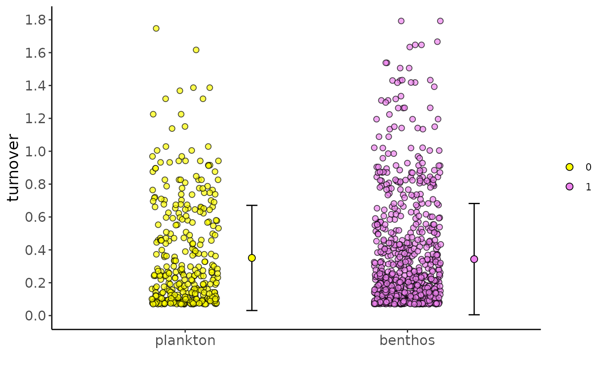
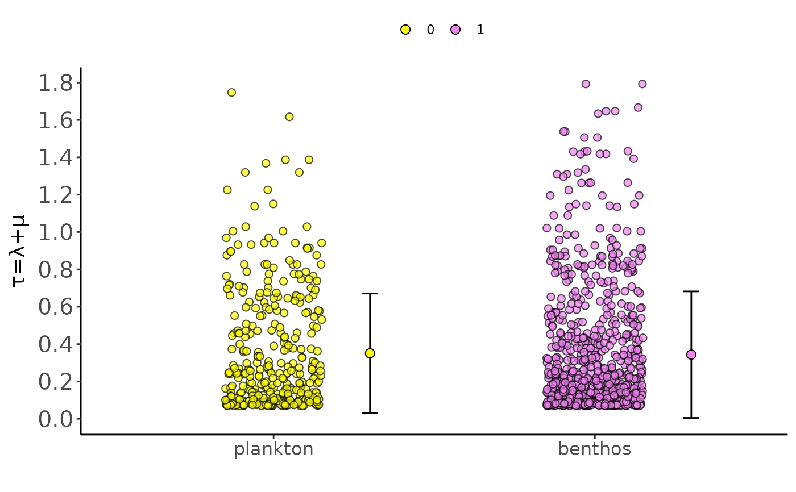

R/utilhisse.R
h_scatterplot.RdA function to plot a scatterplot of (model-averaged) diversification rates in the alternative states. We can change the rate plotted on the y axis and modify the label for the x-axis (your binary 0/1 trait).
h_scatterplot( processed_recon, parameter = "turnover", states_names = c("0", "1"), colors = c("yellow", "violet"), plot_as_waiting_time = FALSE )
| processed_recon | An object produced by |
|---|---|
| parameter | The diversification parameter to be plotted on the y axis. Possible options are turnover, extinct.frac, net.div, speciation, extinction |
| states_names | A character vector of length two giving the translation for states 0 and 1 |
| colors | Colors for the points in the two alternate states |
| plot_as_waiting_time | Logical. Whether to plot the rates or their inverse (waiting times) |
A jittered scatterplot of (model averaged) tip-associated rates.
data("diatoms") processed_hisse <- h_process_recon(hisse_recon=diatoms$cid4_recon) hisse_rates_plot <- h_scatterplot( processed_recon=processed_hisse, parameter="turnover") # modifications are easy with ggplot # change x axis tick labels hisse_rates_plot + scale_x_discrete(breaks=c(0,1), labels=c("plankton", "benthos"))# change the position of the legend hisse_rates_plot + scale_x_discrete(breaks=c(0,1), labels=c("plankton", "benthos")) + theme(legend.position="top")# use expressions (for greek letters) in the axis labels hisse_rates_plot + scale_x_discrete(breaks=c(0,1), labels=c("plankton", "benthos")) + theme(legend.position="top") + labs(y=expression(paste(tau, "=", lambda, "+", mu))) + theme(axis.text.y=element_text(size=15))